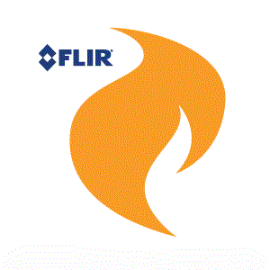
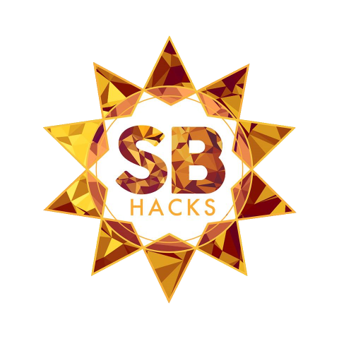
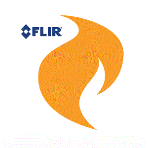
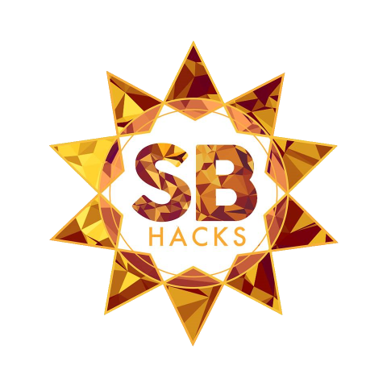

On top of hackathons, I also have worked on many interesting class projects as well:
- CS 130: Software Engineering (UML)
- CS 118: Computer Network Fundamentals (C++)
- Project Riddikulus: Router implementation
- Project Confundo: UDP connection establishment and congestion control
- Project Accio: simple TCP file transfer
- Psych 186B: Neural Networks (Matlab/Octave, Python)
- Final Project: RNN Music Composer (class slides)
- feed-forward neural network simulation
- feature classification via linear association
- lateral inhibition models
- Widrow-Hoff (least means squares) error correction algorithm
- linear associator models for associative memory
- random vector generation and stimuli representation
- CS 170A: Mathematical Modeling Methods for Computer Science (Matlab/Octave)
- Final Project: Brain Network Connectivity and Intelligence
- Income tax analysis, earthquake frequency analysis, Newton's method, regularized optimization in ridge regression
- Musical analysis via FFT, sunspot frequency analysis, Photoshop detector
- Smiling/unusual face analysis and classification via eigenfaces, image compression
- Image color inversion and conversion to greyscale, global temperature analysis
- CS 145: Data Mining (Python)
- CM 124: Computational Genetics (Python, R)
- Final Project: Haplotype Assembly
- Genome Wide Association Study (GWAS) analysis using association statistics/power and Bonferroni correction to find significant single nucleotide polymorphisms (SNPs) within a given genome
- CS M152A: Digital Design Laboratory (Verilog)
- FPGA Blackjack: low-level game logic, pseudorandom number generator, linear feedback shift registers, game state handling
- Stopwatch implementation: custom clocks, debouncers, pause/reset functionality, 7-segment display control
- Combinatorial circuit design, prototyping, implementation, and simulation testing for a two's complement linear encoding to floating point representation converter
- Use of the Xilinx ISE, ISim, and iMPACT interface to modify and test Verilog code onboard a Nexys3 FPGA board
- CS 188: Advanced Game Development for Virtual Reality (Blueprint, C++)
- VR puzzle game prototype with Leap Motion & Oculus Rift using Unreal Engine 4
- CS 161: Fundamentals of Artificial Intelligence (Lisp)
- N-Queens solver
- Sokoban solver
- constraint satisfaction problems
- propositional and first-order logic
- decision trees and Bayesian networks
- neural networks
- CS 111: Operating Systems (C)
- peer-to-peer network client and server attack & defense
- Linux file system driver
- ramdisk Linux kernel module
- parallelized shell prototype
- CS 131: Programming Languages (OCaml, Prolog, Java, Scheme, Python)
- containerization of Twisted Places proxy herd using Docker
- asynchronous server herd prototype for the Google Places API using Twisted
- matcher for DNA patterns in Scheme
- benchmarking different implementations of Java parallelization models
- KenKen solver in Prolog
- manipulating context-free grammars in OCaml
- CS 35L: Software Construction Laboratory (Shell, Bash, C, Python)
- presentation about brain-computer interfaces
- benchmarking multithreaded programs
- crashing a server using buffer overrun exploit
- using system calls
- simple key cryptography
- using the GNU debugger
- using Git as a version control system
- simple Python scripting
- shell/bash scripting & using regular expressions
- familiarization with the Linux command-line environment
- CS 33: Intro to Computer Organization (C)
- using OpenMP to optimize and parallelize code
- exploiting a program using buffer overflow
- using GDB and objdump to "defuse binary bombs"
- manipulating bit-level representations of integers
- CS 32: Intro to Computer Science 2 (C++)
- database using multiple-key maps implemented with a binary search tree
- implementation of a bomberman-style game
- CS 31: Intro to Computer Science 1 (C++)
- simple ASCII "zombie extermination" game
- basic word deduction game
- rudimentary spam checker
 


